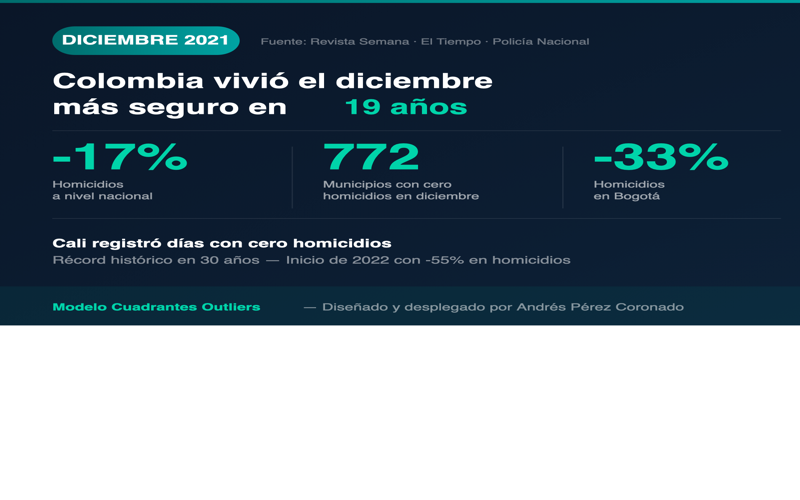
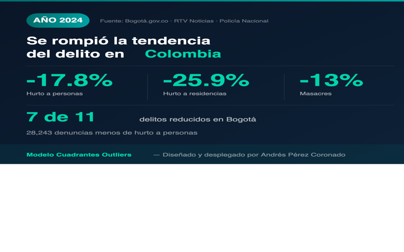
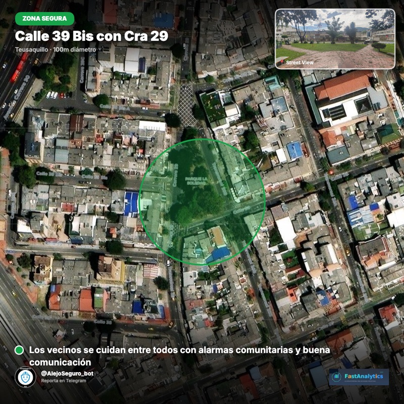
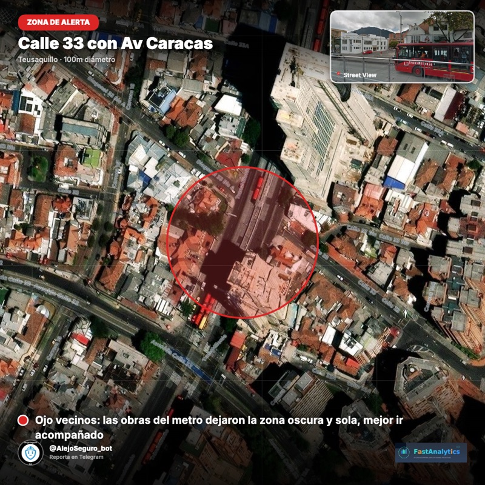
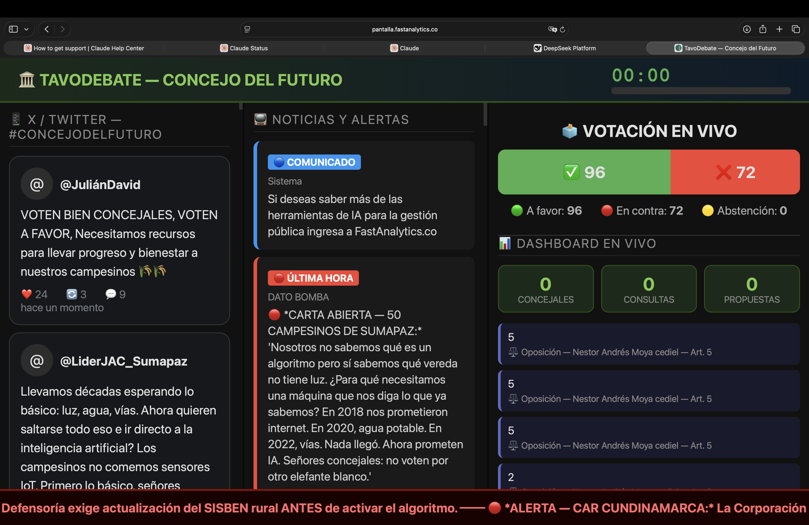
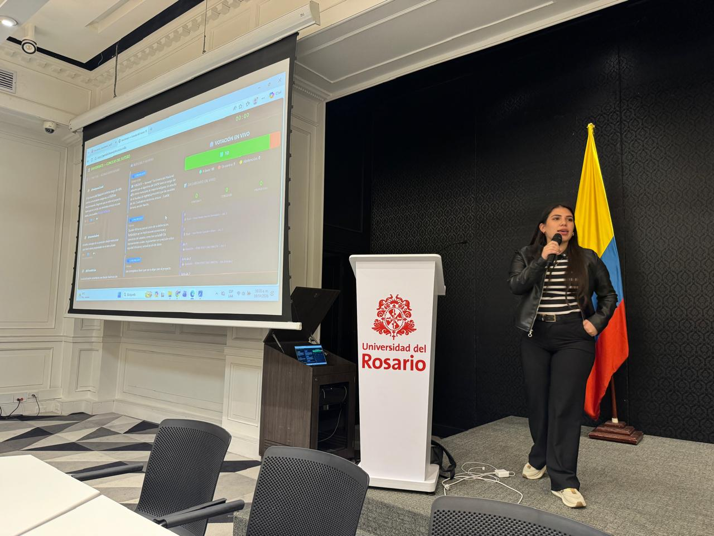

Cuadrantes Outliers
Modelo espaciotemporal de detección de valores atípicos que diseñé y desplegué para anticipar concentraciones de homicidios por cuadrante. Sustentó la estrategia que llevó al diciembre más seguro de Colombia en 19 años.
- -17% homicidios a nivel nacional (dic. 2021)
- -33% homicidios en Bogotá
- 772 municipios sin homicidios; Cali registró días sin homicidios (récord de 30 años)

Ver cobertura de prensaMulticrimen
Modelo predictivo multidelito que diseñé y desplegué para romper la tendencia del crimen en Colombia, cruzando patrones espaciotemporales de distintos tipos de delito a la vez.
- -17.8% hurto, -25.9% hurto residencial, -13% masacres
- 7 de 11 delitos reducidos en Bogotá
- 28,243 denuncias de hurto menos

Ver cobertura de prensaAlejoSeguro
Bot de Telegram que diseñé para recolectar percepciones georreferenciadas de seguridad ciudadana en Bogotá directamente de la gente, en tiempo real.
- Reportes georreferenciados en segundos
- Mapas de calor de percepción ciudadana


AlejoGeo
Plataforma de inteligencia espaciotemporal que diseñé para recolectar audio, texto, video e imágenes georreferenciadas vía chatbot, cruzarlas con bases de datos vectoriales y entregar un chat donde preguntas lo que necesitas saber de tu entorno.
- Sectores: salud, minería y energía, construcción, educación
- Reportes PDF, dashboards y chat con IA
GabyVigía
Sistema de decisión predictiva que diseñé bajo el ciclo Vigilar · Predecir · Decidir. Detecta señales predictivas débiles con machine learning y análisis de patrones espaciotemporales, combinando chat de Telegram, dashboards de mapas de calor, grafos de actores y reportes en PDF y audio.
- 5 capas de inteligencia integradas
- Metodología del Eneagrama de Decisión (9 fases)


TavoDebate
La primera plataforma que diseñé para gestionar sesiones legislativas y regulatorias con 10 asesores de IA especializados trabajando en paralelo: legal, comunicaciones, económico, político, tecnológico, catastral, agrario, fiscal, participación y gestión. Probada en la Universidad del Rosario con concejales de toda Cundinamarca: 527 consultas, 73 enmiendas, votación artículo por artículo.
- Bot de Telegram + dashboard en vivo
- Casos de uso: concejos municipales, debates normativos, simulaciones legislativas


